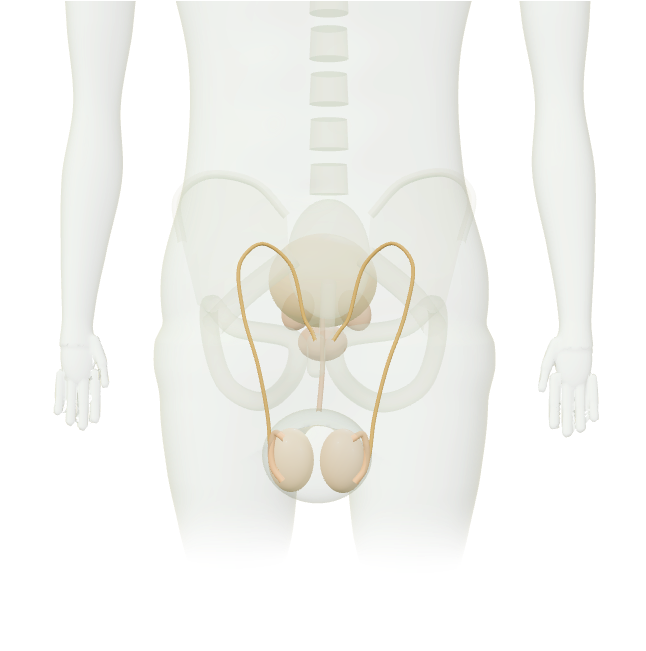
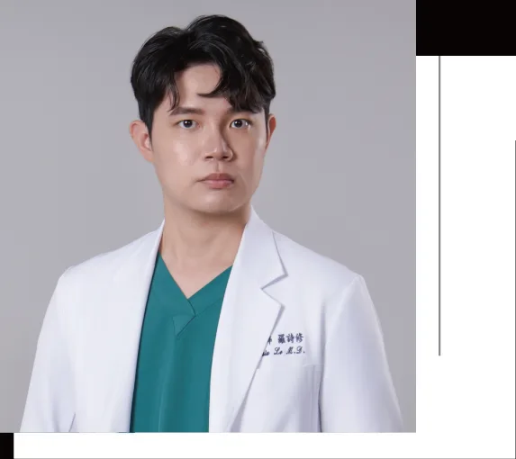

想無憂無慮和伴侶一起享受性生活嗎？現代人生活多元，有許多人因為各種人生規劃，確定自己不想生育後而選擇「結紮」。現今結紮手術發達，鮮少有後遺症，然而結紮手術仍是人生當中的重大決定。津久診所x泌密會客室的雙主治醫師－陳偉傑醫師和羅詩修醫師以下將會用常見的問答方式整理，讓大家輕鬆了解結紮手術。
-感謝蔡阿嘎指名選擇手術-
-對結紮有疑問？讓雙主治醫師解釋給您聽-
-精子如何製造？-
-無刀口男性結紮手術怎麼做？-
-簡易自我評估：我適合做無刀口男性結紮手術嗎？-
已經有小孩不想再生育的夫妻。
沒有生育需求的夫妻。
本身有嚴重性遺傳疾病，不想產下相同基因小孩者。
-男性結紮的好處-
永久生育控制
不影響性愛樂趣
不用麻煩的避孕措施
比女性結紮簡單
-無刀口男性結紮手術會影響性能力、早洩嗎？-
不會！ 輸精管結紮後之讓男性能更自在享受性生活，不會阻斷男性賀爾蒙的運輸與正常運作，手術後還是有射精的快感，精液量也不會太受影響。
-無刀口男性結紮手術會不會很痛啊？-
-結紮手術之後，就可以不用避孕了嗎？-
-結紮手術後要想生小孩可以恢復嗎？-
7成｜間隔時間3年內，接通成功率約7成
5成｜間隔時間8年內，接通成功率約5成
3成｜間隔時間10年內，接通成功率約3成
-無刀口男性結紮手術 vs 傳統輸精管結紮手術-
| 比較項目 | 無刀口結紮手術 | 輸精管結紮手術 |
|---|---|---|
| 手術方式 | 在陰囊上開一個小洞，用特殊器械，將輸精管拉出剪斷，並封住精子的通道，不用動刀，幾乎沒有傷口。 | 是相對較傳統的手術方式，具體手術方法為：在陰囊上兩旁各開一個小洞，分別拉出輸精管剪斷，封住精子通道。 |
| 手術時間 | 15-20 分鐘 | 30-50分鐘 |
| 術後恢復時間 | 快 | 普通 |
| 美觀程度 | 更好 | 普通 |
| 術後疼痛程度 | 較低 | 較痛 |
-男性結紮手術 vs 女性結紮手術-
| 比較項目 | 男性結紮 | 女性結紮 |
|---|---|---|
| 傷口大小 | 陰囊表皮及皮下 約 0.5 公分 | 肚臍下 1-2 公分 (腹腔鏡約 1 公分長 微小開腹手術約 2 公分長) |
| 傷口部位 | 陰囊皮膚表面及皮下 傷口相對較淺 | 經陰道或肚皮進入腹腔 傷口相對較深 |
| 手術時間 | 15 - 20 分鐘 | 40 分鐘 - 60 分鐘 |
| 麻醉方式 | 局部麻醉 或 舒眠麻醉 | 半身 或 全身麻醉 |
| 術後恢復期 | 無須住院 手術完畢後當日 或隔日即可上班 | 微小開腹須住院 並休息 1 - 2 天 |
| 後遺症 | 絕大多數男性不會有嚴重後遺症 極少數出現陰囊局部感染 | 骨盆腔不適疼痛 卵巢囊腫 月經疼痛等 |
| 手術費用 | 相對較低 | 相對較高 |
| 避孕失敗率 | 0.15% | 0.5% |
*避孕失敗率取自台灣婦產科醫學會編《結紮手術及避孕諮詢參考指引》第9頁，非本醫療機構之實際數據
查看原圖台北男性結紮手術推薦！
專業主治醫師為你把關 陳偉傑醫師 X 羅詩修醫師
陳偉傑 醫師
『創造非凡精彩人生』
健康，其實是一個動詞，需要通過努力與踏實砌成的動詞，很多人會說奮鬥不一定會成功，但我們要說：「不奮鬥，絕對失敗」只有奮鬥過的人生，才能不留遺憾、才能更加精彩也才能至善至美。


羅詩修 醫師
『捍衛男性泌密健康』
泌密健康，就四個字，但它並不會讓你一輩子都過得那麼容易，轉機就在於你堅強的那一刻，你的人生，會因為你的泌密健康，過得更性福美滿，也過得更加精彩
-其他常見問答-
Q1. 結紮手術需要多久？手術結束後當天可以洗澡嗎？
我們採用無刀口式結紮手術，由津久診所的陳偉傑、羅詩修醫師親自執刀，手術時間一般約 15 - 20 分鐘即可完成，無須住院，可於當日或隔日正常上班。 若您在手術中選用醫療用凝膠的話，當天返家後即可正常洗澡。Q2. 結紮之後會影響睪固酮/男性賀爾蒙嗎？
不會。 睪固酮是由睪丸製造後，經由血管輸送至全身血液循環，沒有切除睪丸，就不會影響睪固酮/男性賀爾蒙。Q3. 結紮之後會影響性慾嗎？
不會。 結紮僅是將輸精管切斷與燒灼而已，因為不影響睪固酮和男性賀爾蒙，所以也完全不會影響性功能以及性慾。Q4. 結紮之後射精會不會沒有精液？
不會。 精液成分組成：60-70% 來自儲精囊液，10-30% 來自前列腺液，2-5% 來自睪丸的精子。結紮後精液量多少會減少，然而只減少來自睪丸的微小部分，肉眼沒有太大差異！Q5. 結紮之後，精子去哪裡？
精子若無法從輸精管出去，會堆積在副睪丸，之後會自然被身體代謝掉，不會傷身。Q6. 結紮手術會有術後併發症嗎？
結紮手術完成一個月內，可能有以下併發症。只要經過醫師專業指示的術後照護，即可回復正常。- 射精睪丸腫脹感
- 偶發性副睪丸發炎
Q7. 結紮手術可以跟割包皮一起做嗎？
可以。若您還有其他想要處理的問題（如：燒菜花、珍珠丘疹去除、龜頭增大、陰莖減敏等）想要一併處理，經過雙主治醫師評估後都可以一併執行。請透過官方 Line 向我們事先討論。Q8. 我從外縣市／離島／海外來，想要看完診就直接進行結紮手術，可以當天看診完畢就直接進行結紮手術嗎？
可以。津久診所提供當日看診、當日手術的「快速通關」服務。不只結紮，割包皮、燒菜花、珍珠丘疹去除手術等皆可使用「快速通關」服務。請透過官方 Line 向我們提前預約。-注意事項-
術前須知
- 夫妻雙方確定不再生育才能結紮。
- 依優生保健法規定，男性結紮需經醫師診視評估後，夫妻雙方皆需同意，並親自簽署手術暨麻醉說明同意書。醫師再安排手術日期。
- 男性結紮不屬於健保給付範圍，手術及麻醉須自費。
- 手術大約只要 15 - 20 分鐘，不需住院，術後當日或隔天就可以上班。
術後須知
- 手術當天請多休息，避免走動磨擦傷口造成出血。
- 結紮後的傷口在 3 天內不要碰水，以免傷口感染。3 天後可以淋浴，淋浴後傷口處用乾毛巾拍乾，傷口完全癒合前勿泡澡。若您在手術中選用醫療用凝膠的話，手術結束後當天即可淋浴。
- 手術傷口乾燥後，用小紗布或 OK 繃保護即可。
- 手術後可正常上班，一般輕度的日常活動可進行，一週內不要搬重物或是劇烈運動，傷口完全癒合後即可恢復正常性生活。
- 手術後一週可回醫院門診追蹤，確認傷口恢復狀況。
- 若術後有鮮血滲出、臭味、膿性分泌物或發燒超過 38.5 度時，請盡速回診。
- 每日依照醫師指示按時服用藥物，保持傷口乾燥清潔。
- 兩個月內進行剩餘精子排空，經過精液檢查確定無殘存精液後，方可進行不避孕性生活。
生活作息與清潔
- 返家後請維持均衡飲食，避免菸、酒及辛辣等刺激性食物。
- 傷口前 3 天勿碰水，每日至少換藥一次（如傷口滲濕請立刻換藥）。
【本資訊無法取代醫師親自關心您；若有副作用等使用問題，請洽醫師諮詢。】
-醫師服務地點-
津久診所
台北市中山區松江路276號3樓
開啟原頁地圖 ↗
本地預覽不自動連線 Google 地圖。
-如何抵達-
捷運
橘線(中和新蘆線)行天宮站的4號出口，出站後右轉步行40秒就可以看到津久診所的大招牌，搭電梯上3樓。
開車
1.台灣聯通停車場-將捷二場(停車塔，眾多信用卡可停車折抵): 台北市中山區松江路336號
- 聯邦佳佳大樓停車場(地下平面停車場): 台北市中山區松江路235巷22號